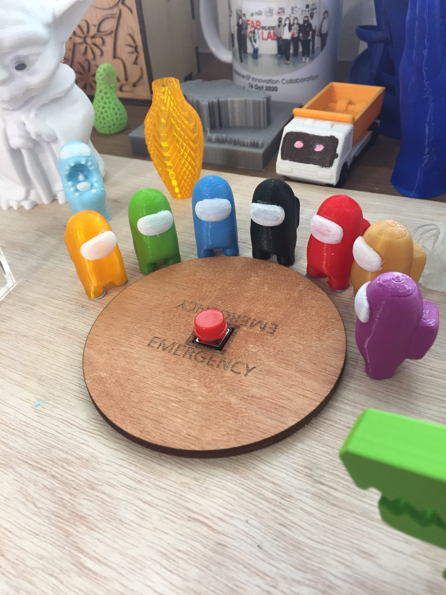
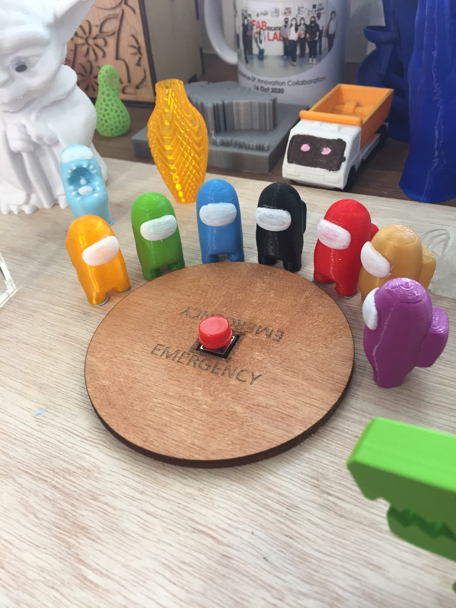

EP1000 Digital Fabrication & Prototyping
Hello there! Welcome to my first website created as of 1/11/2020!
This site is created to document the projects and other wacky things I do in Digital Fabrication and Prototyping elective course.
About me Hello there! Welcome to my first website created as of 1/11/2020!
This site is created to document the projects and other wacky things I do in Digital Fabrication and Prototyping elective course.
About me | Name: Xavier Lim | |
|---|---|
| Class: DMRO/FT/2B/02 | |
| Location: Central region | |
| Contacts: Instagram - Youtube |
hello there
The universe has a beginning, but no end. —Infinite. The stars too have beginnings, but their power accompanies their decline. —Finite. It the wise who are the most foolish. History has taught us as much. The fish of the sea know not the world of the land. Were they to possess wisdom, they too would experience decline. It is more absurd that humans should surpass the speed of light than it is that fish should start living on the land. This can be said to be God's final warning to those who resist.